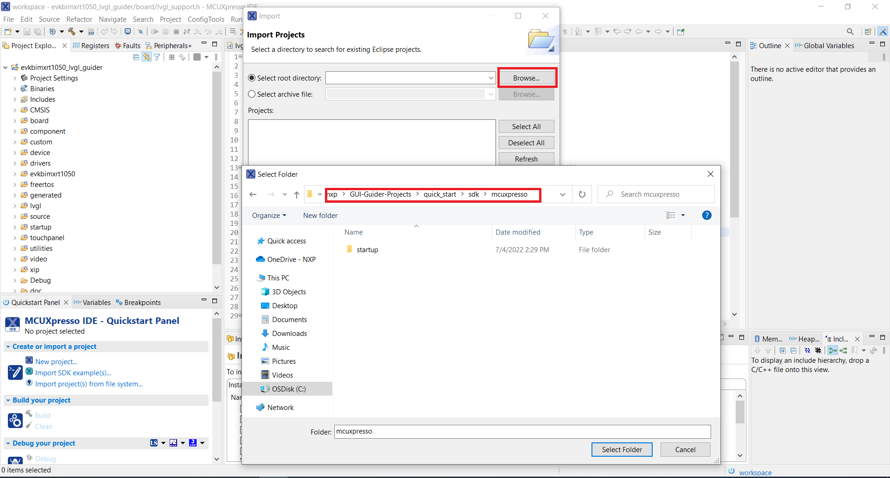
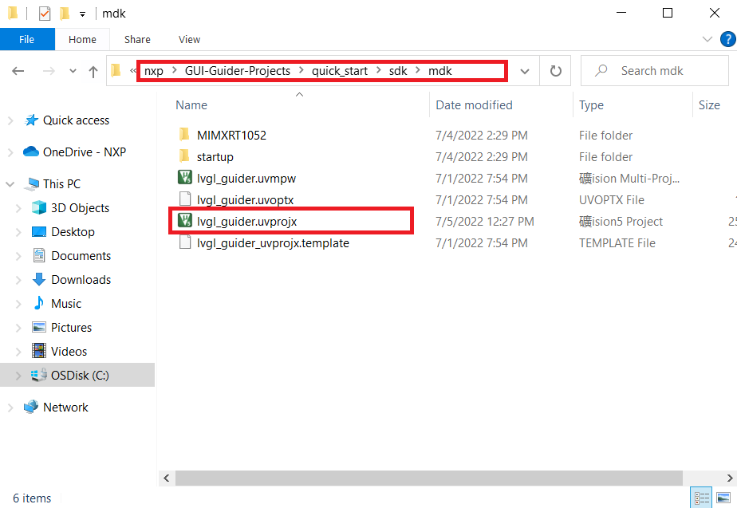

Debug project
This section contains information on how to debug the GUI Guider project.
Target
A GUI Guider project integrates the support of different IDE toolchains, including MCUXpresso IDE, IAR, Keil MDK. This chapter describes how to debug an HMI application by an IDE.
MCUXpresso
To debug the GUI Guider project on MCUXpresso, perform the following steps:
- Open the link https://mcuxpresso.nxp.com/en/select.
- Select the development board. For example, EVK-MIMXRT1064.
- Click the Build MCUXpresso SDK button.
- Select the two middleware LVGL and FreeRTOS from the Build SDK for <target> page.
- Make sure to select the MCUXpresso (toolchain).
- Click the Download SDK button.
Figure: Downloading SDK 
- Import the downloaded SDK into the IDE.
- Click File > Import > General.
Figure: Importing project 
- Select the GUI Guider project MCUXpresso path.
Figure: Selecting the GUI Guider project path 
IAR
Find the path named "iar", double clicklvgl_guider.eww.
Keil MDK
Find the path named "mdk", double clicklvgl_guider.uvprojx.